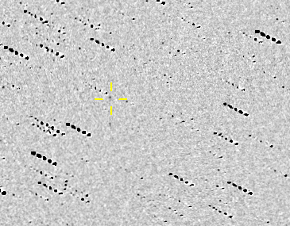

Shenton Park Observatory (D21) continues its record breaking faint target work with the recovery of 2008 VK14.
With a published magnitude of 20.2, D21 successfully recovered 2008 VK14 on April 18. My esteemed collaborator, Dr. Paulo Holvorcem, combined a sequence of 15 x 300 second exposures to reveal the faint Apollo type NEO which has a diameter between 300m and 500m.
The MPEC can be found here.

Animation courtesy of Paulo Holvorcem